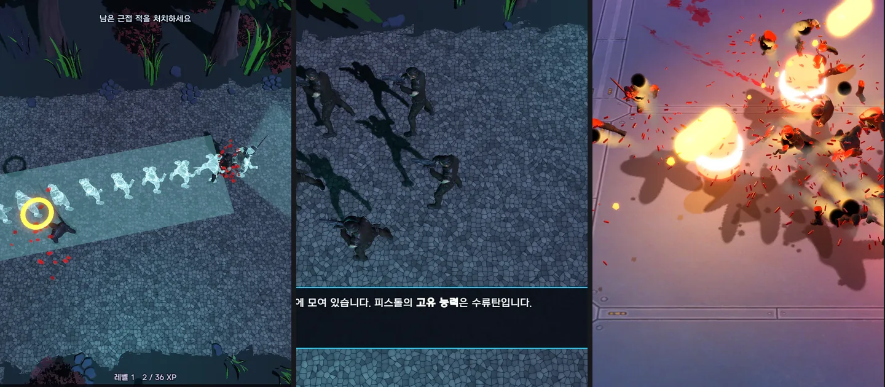
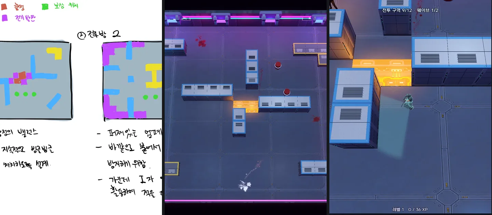
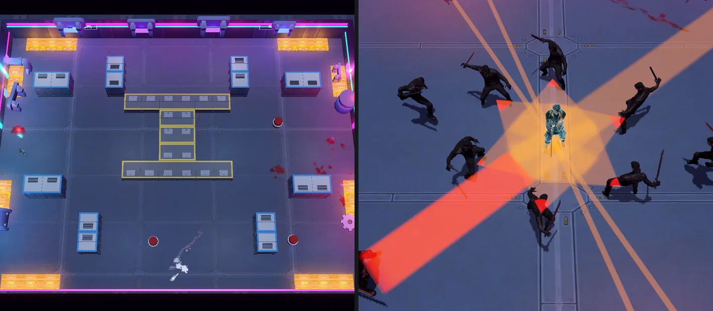

2026.08 – 10 · 1인 개발
Edgerunners
사이버펑크 2077을 탑다운 로그라이트로 재구성한 게임입니다.
몸에 심는 사이버웨어로 빌드를 짜고, 그 빌드로 몰려오는 적 무리를 한 번에 쓸어버립니다.
게임 기획 포트폴리오
레벨 및 전투 디자이너를 지망하는 게임 기획자입니다.
지형과 배치, 수치로 플레이어의 다음 행동을 유도하는 레벨 설계에 관심이 있습니다.
출시작 역기획으로 설계 근거를 정리하고, 직접 만든 게임에서 그 원리를 적용하고 검증하며 성장하고 있습니다.
01 · 게임
62일 동안 혼자 기획하고 만든 탑다운 액션 로그라이트입니다. 브라우저에서 바로 플레이할 수 있습니다.
2026.08 – 10 · 1인 개발
사이버펑크 2077을 탑다운 로그라이트로 재구성한 게임입니다.
몸에 심는 사이버웨어로 빌드를 짜고, 그 빌드로 몰려오는 적 무리를 한 번에 쓸어버립니다.
02 · 기획 역량
Edgerunners를 만들며 가장 공들인 네 가지입니다. 무엇을 의도했고, 어떤 과정을 거쳐, 어떤 결과를 냈는지 정리했습니다.




03 · 역기획서
레벨과 시스템이 왜 그 배치와 그 수치인지, 설계 목표에서부터 다시 짚었습니다. 문제가 보이는 구간에는 보완 기획을 붙였습니다.
04 · AI 활용
세션이 바뀌어도 끊기지 않는 인수인계와, 구현 · 검증을 나눈 교차 검증에 가장 공을 들였습니다.
코드로 남지 않는 계획 · 기획 · 제안까지 문서에 기록해, 세션이 바뀌어도 오해나 혼선 없이 작업을 이어 갔습니다.
구현과 별개의 세션이 코드와 게임플레이를 점검해 기획 충돌, 개선점, 수정 결과를 교차 검증했습니다.
구현 → 기능 테스트 → 전체 검사 → 검증 피드백 → 개선 → 직접 플레이테스트 → 최종 개선 순서로 부족한 테스트 시간을 나눠 썼습니다.